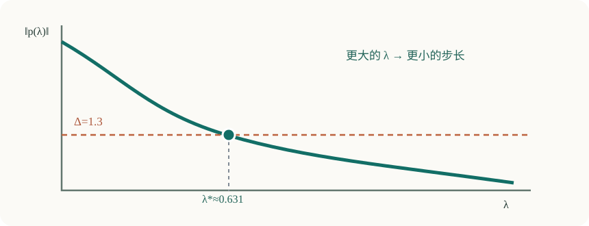

4.3 信赖域子问题求解：为什么把半径约束变成 λ 的根问题
二次模型最小化受球形信赖域约束时，解通常满足一个带对角平移的线性方程。通过调节单一乘子 λ，让解的范数匹配给定半径，可以把高维约束问题压缩成一维求根。
从受约束二次模型到乘子条件
考虑 min q(p)=gᵀp+½pᵀBp，满足 ‖p‖₂≤Δ，B 是实对称矩阵。全局最优解 p* 存在 λ≥0，使 (B+λI)p*=−g、B+λI 半正定、‖p*‖≤Δ、λ(Δ−‖p*‖)=0。
若 B 正定且无约束 Newton 步 pᴺ=−B⁻¹g 已在球内，λ=0，直接取 pᴺ。否则大多需要 λ＞0 和 ‖p(λ)‖=Δ。
为何 λ 足够大时出现单调的范数曲线
对称矩阵可以谱分解 B=Q diag(μᵢ)Qᵀ。在 B+λI 正定的区域 λ＞−μ_min，p(λ)=−(B+λI)⁻¹g，由此 ‖p(λ)‖²=Σ(qᵢᵀg)²/(μᵢ+λ)²。
每个分母随 λ 增大，因而范数连续且非增，并在 λ→∞ 时趋向 0。若梯度在最负特征子空间上有非零投影，λ 接近 −μ_min 时范数趋于无穷，便能通过一维根搜索匹配球半径。

二维例子：乘子的数值位置
取 B=diag(4,1)、g=(2,2)、Δ=1.3。无约束步为 pᴺ=(−0.5,−2)，范数约为 2.06155，超出信赖域。
求解 (2/(4+λ))²+(2/(1+λ))²=1.3²，可得 λ≈0.63109456；对应 p≈(−0.43186335,−1.22617048)，恰好在球面上，模型下降约 2.19130873。
稳定求根与原始公式的区别
可以先找到一个 λ_hi，使 ‖p(λ_hi)‖≤Δ，再在 [0,λ_hi] 上二分；当 B 不定时，必须把左端提升至 −μ_min 之上，不能试图 Cholesky 分解不正定的 B+λI。
经典方法还可利用 Cholesky 分解及对 1/‖p(λ)‖ 的 Newton 迭代快速更新 λ，但需要保护起点、步长范围、因子分解失败及浮点极端情况。
何时一维求根失效
若 g 与最小特征子空间正交，即使 λ→−μ_min 的极限，‖p(λ)‖ 也可能小于 Δ；这时在开区间内找不到范数等于 Δ 的 λ。
这就是 Hard Case：须取边界值 λ=−μ_min，再沿最小特征值的零空间补一个分量，使步长范数等于 Δ。下方程序限定 B 正定；不应将它套用于 Hard Case。
交互：调整参数，核查结论
调整 Δ，观察 λ 从正数回到零的临界半径；若 Hessian 出现负特征值，为什么二分搜索的左端点需要更严格的限制？
实时计算
Python：复现结果与断言
以下代码只依赖 Python 标准库；它复核本页算例，并对假设不满足的输入进行明确处理。
"""Secular-equation bisection for a symmetric positive definite 2-D B."""
from math import hypot
def step(lam):
return (-2.0/(4.0+lam),-2.0/(1.0+lam))
def solve(radius):
if radius<=0:
raise ValueError("radius must be positive")
if hypot(*step(0))<=radius:
return 0.0,step(0)
lo,hi=0.0,1.0
while hypot(*step(hi))>radius:
hi*=2.0
for _ in range(80):
mid=(lo+hi)/2
if hypot(*step(mid))>radius:
lo=mid
else:
hi=mid
lam=(lo+hi)/2
return lam,step(lam)
def drop(p):
return -(2*p[0]+2*p[1]+.5*(4*p[0]**2+p[1]**2))
if __name__=="__main__":
lam,p=solve(1.3)
print(lam,p,drop(p))
assert abs(lam-0.6310945588223069)<1e-9
assert abs(hypot(*p)-1.3)<1e-10
assert abs(drop(p)-2.1913087311268886)<1e-9
assert solve(2.5)[0]==0